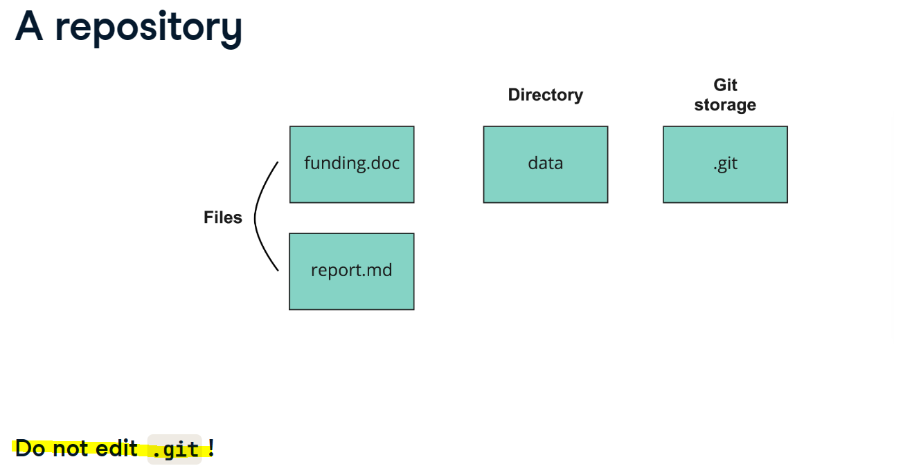
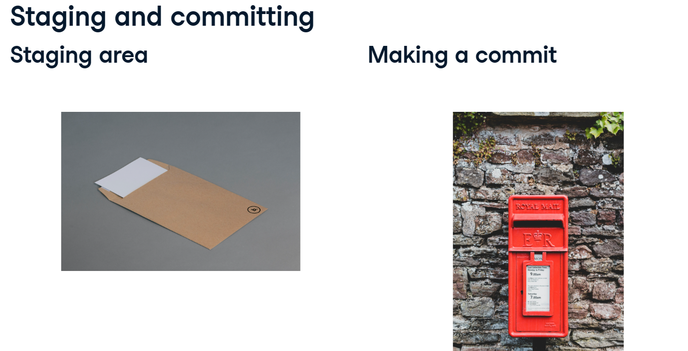
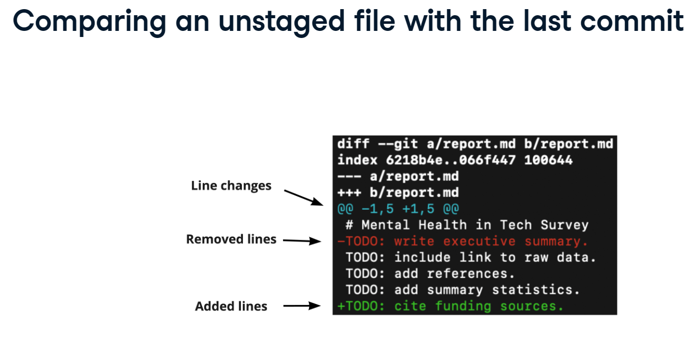
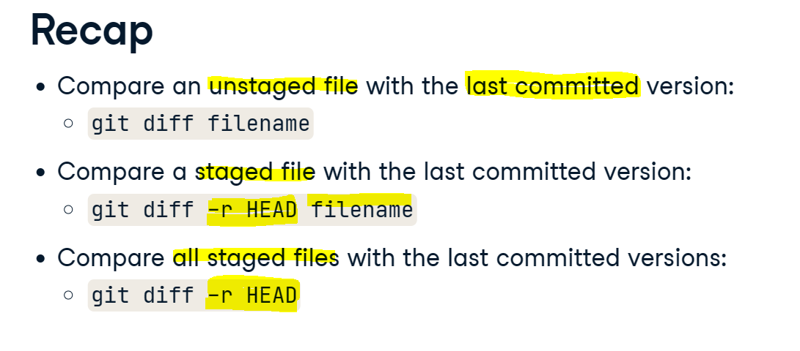
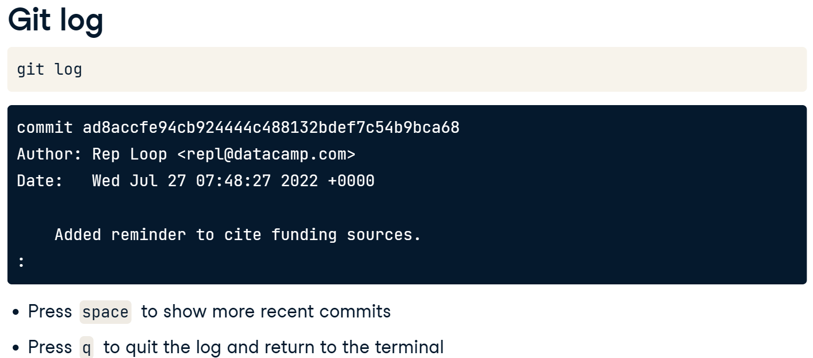
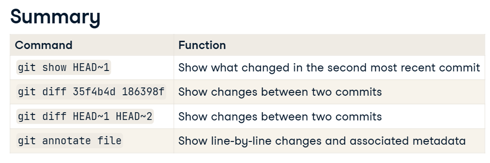
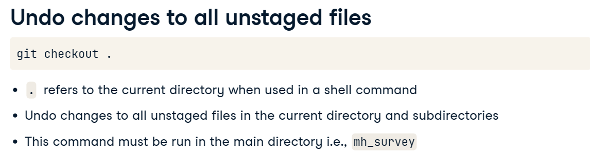
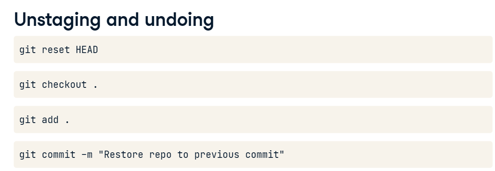

How can I link my project with github?
Create a GitHub repository (if you haven’t already):
Go to github.com and log in
Click the “+” icon in the top right, select “New repository”
Name your repository (e.g., “quarto-shinylive-project”)
Choose public or private
Don’t initialize it with README or other files if you already have local content
Click “Create repository”
Link your local project to the GitHub repository:
# Navigate to your project directory if you're not already there cd "F:/IT/quarto/Quarto Shinylive" # Initialize a Git repository if you haven't already git init # Add your remote GitHub repository git remote add origin https://github.com/Loisi70/shiny.git # Add your files to Git git add . # Commit your changes git commit -m "Initial commit" # Push to GitHub detault branch "main" or "master" if "master" is default branch git push -u origin main
Authentication
Generate a Personal Access Token (PAT) on GitHub:
Go to GitHub.com and log in
Click your profile picture in the top-right → Settings
Scroll down to “Developer settings” in the left sidebar
Click “Personal access tokens” → “Tokens (classic)”
Click “Generate new token” → “Generate new token (classic)”
Give it a descriptive name like “Local Git operations”
Select scopes (at minimum, select “repo” for full repository access)
Click “Generate token”
IMPORTANT: Copy the token immediately! GitHub will only show it once
Use your token for authentication:
When you push to GitHub next time, use your token as the password
Your username remains the same, but instead of your GitHub password, enter the token
Store credentials so you don’t need to enter them each time (optional):
git config --global credential.helper storeThen the next time you enter your credentials, Git will remember them.
bash git commands
| Command | Description |
|---|---|
| ls | lists unhidden objects: will not display .git as this is hidden |
| ls -a | will display all incl. hidden files such as .git |
| git –version | returns git version |
| nano report.md | opens text editor: ctrl + O and Ctrl + x to save |
| pwd | print working directory |
| echo | echoing something to a file, >> appends to the file and > overwrites the file echo “49,M,No,Yes,Never,Yes,Yes,No” >> mental_health_survey.csv |
| git add report.md git add . |
adds the file to the staging area adds all files to the staging area |
| git commit -m “Text” | makes a commit with a log message |
| git status | shows file in the staging area |
| git diff report.md git diff -r HEAD filename git diff -r HEAD |
compare unstaged file with the last committed version compare as staged file with the last commited version compare all staged files with the last committed version |
| git log | shows all commits made in chronological order |
| git show 36b761e4 | using the 6-8 first characters of the hash, made changes are shown |
| git show HEAD~3 | shows the 4 last versions |
| git diff 34f4bd88 186398f git diff Head~3 Head~2 |
will show the changes between two commits will also show the changes between two commits |
| git annotate report.md : |
will show who made the changes and when “:” indicates that there is more information that can be accessed by hitting the space key |
| git reset HEAD report.md git reset HEAD |
unstage the report.md file from staging area unstage all files from staging area |
| git checkout – report.md git checkout . git checkout dc9d8fac report.md git checkout Head~2 report.md |
reset UNSTAGED report.md to the version of the last commit reset UNSTAGED all files to the versions of the last commit reset report.md to this particular version reset report.md to this particular version |
| git log -3 git log -3 report.md git log –since=‘Apr 2 2022’ git log –since=‘Apr 2 2022’ –until=‘Apr 11 2022’ |
show last 3 logs show last 3 logs for report.md show log with changes since 2nd of April 2022 will show changes in range |
| git clean -n git clean -f |
list all untracked files delete these untracked files (cannot be undone!!!) |
| git config –list git config –list –local git config –list –global git config –list –system git config –global (setting value) git config –global alias.st git config –global –list |
show config settings settings for the one specific project settings for all of our projects settings for every users on this computer will allow changing the setting: git config –global user.email alois.alig@gmx.ch git config –global user.name ‘Alois Alig’ creates an alias ‘st’ for the ‘status’:–> ‘git st’ = ‘git lists what is in the’.gitconfig’ file, for # example aliases |
| nano .gitignore | list files to ignore whereas * acts as a wildecard |
| git checkout -b report | create a branche called report |
| git checkout report | switch to the report branch |
| git branch | list the branches |
| git diff main summary-statistics | show difference between branches |
| git merge source destination | merge from source branch to destinantion |
| git init | turn the active directory into a repo –> do not created nested repos (repo in a repo)! |
| git init repo1 cd repo1 git status |
create a new repo “repo1” in the current directory change directory to “repo1” show the status of newly created repo “repo1” |
| git clone (url) git clone /home/repo new_repo |
clone a repo from url to clone locally |
| git remote -v | shows the remote source verbose |
| git remote add george https://github.com/george_datacamp/repo |







